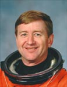

Lyndon B. Johnson Space Center
Houston, Texas 77058
|
National Aeronautics and Space Administration Lyndon B. Johnson Space Center Houston, Texas 77058 |
 |
Biographical Data |
||
FRANK L. CULBERTSON, JR. (CAPTAIN, USN, RET.)
NASA ASTRONAUT (FORMER)
PERSONAL DATA: Born May 15, 1949, in Charleston, South Carolina, but considers Holly Hill to be his hometown. Married, June 1987, to the former Rebecca Ellen Dora of Vincennes, Indiana. Five children. His parents, Dr. and Mrs. Frank Culbertson, Sr., reside in Laurens, South Carolina. Rebeccas mother, Mrs. Avanelle Vincent Dora, resides in Vincennes, Indiana. Her father, Mr. Robert E. Dora, is deceased.
EDUCATION: Graduated from Holly Hill High School, Holly Hill, South Carolina, in 1967; received a bachelor of science degree in aerospace engineering from the U.S. Naval Academy in 1971.
ORGANIZATIONS: Senior Fellow of the American Institute of Aeronautics and Astronautics, member of the Association of Naval Aviators, Aircraft Owners & Pilots Association, the Aviation Boatswains Mate's Association, and the Association of Space Explorers.
SPECIAL HONORS: Awarded the Legion of Merit, the Navy Flying Cross, the Defense Superior Service Medal, the NASA Outstanding Leadership Medal, NASA Space Flight Medals, Navy Commendation Medal, Air Force Commendation Medal, the Armed Forces Expeditionary Medal, the Humanitarian Services Medal, and various other unit and service awards. Distinguished graduate, U.S. Naval Test Pilot School. Awarded Honorary Doctor of Science Degrees, College of Charleston, 1994, and Lander University, 1999. Also awarded the Komarov Certificate for Space Flight Achievment, 1994, the AAS Flight Achievement Award for STS-51, 1994, Aviation Week and Space Technology 1997 Laurel for Achievement in Space, IEEE/ASME Award for Manager of the Year, 1997, and the Space Center Rotary Club Stellar Award for 1998.
EXPERIENCE: Culbertson graduated from Annapolis in 1971 and served aboard the USS Fox (CG-33) in the Gulf of Tonkin prior to reporting to flight training in Pensacola, Florida. After designation as a Naval Aviator at Beeville, Texas, in May 1973, he flew F-4 Phantom aircraft in VF-121, NAS Miramar, California, in VF-151 aboard the USS Midway (CV-41), permanently homeported in Yokosuka, Japan, and with the USAF in the 426th TFTS at Luke Air Force Base, Arizona, where he served as Weapons and Tactics Instructor. Culbertson then served as the Catapult and Arresting Gear Officer for the USS John F. Kennedy (CV-67) until May 1981 when he was selected to attend the U.S. Naval Test Pilot School, Patuxent River, Maryland. Following graduation with distinction in June 1982, he was assigned to the Carrier Systems Branch of the Strike Aircraft Test Directorate where he served as Program Manager for all F-4 testing and as a test pilot for automatic carrier landing system tests and carrier suitability. He was engaged in fleet replacement training in the F-14A Tomcat at VF-101, NAS Oceana, Virginia, from January 1984 until his selection for the astronaut candidate program.
He has logged over 6,000 hours flying time in 40 different types of aircraft, and 350 carrier landings.
NASA EXPERIENCE: Selected as a NASA astronaut candidate in May 1984, Culbertson completed basic astronaut training in June 1985. Technical assignments since then included: member of the team that redesigned and tested the Shuttle nosewheel steering, tires, and brakes; member of the launch support team at Kennedy Space Center for Shuttle flights 61-A, 61-B, 61-C, and 51-L; in 1986, worked at the NASA Headquarters Action Center in Washington, D.C., assisting with the Challenger accident investigations conducted by NASA, the Presidential Commission, and Congress; lead astronaut at the Shuttle Avionics Integration Laboratory (SAIL); lead of the First Emergency Egress Team; and lead spacecraft communicator (CAPCOM) in the Mission Control Center for seven missions (STS-27, 29,30, 28, 34, 33, and 32). Following his first flight, he served as the Deputy Chief of the Flight Crew Operations Space Station Support Office as well as the lead astronaut for Space Station Safety. He was also a member of the team evaluating the hardware and procedures for the proposed mission to dock with the Russian Space Station Mir. Following STS-51, Culbertson was Chief of the Astronaut Office Mission Support Branch; then Chief of the Johnson Space Center Russian Projects Office. In 1994, Culbertson was named Deputy Program Manager, Phase 1 Shuttle-Mir, and in 1995 became Manager of the Shuttle-Mir Program. He was responsible for a multi-national team which executed nine Shuttle docking missions to the Russian Space Station Mir, with seven astronauts spending 30 months cumulatively on-board the Mir Station, plus all the associated science and docking hardware to ensure the success of the joint program, a precursor to the building of the joint International Space Station. Just prior to his current flight assignment, Culbertson spent one year as Deputy Program Manager for Operations of the International Space Station Program.
A veteran of three space flights, Culbertson has logged over 146 days in space.
SPACE FLIGHT EXPERIENCE: STS-38 Atlantis (November 15-20, 1990) was a five-day mission during which the crew conducted Department of Defense operations. The mission concluded after 80 orbits of the Earth in 117 hours, 54 minutes, 28 seconds, the first Shuttle to land in Florida since 1985.
STS-51 Discovery (September 12-22, 1993) was a ten-day mission during which the crew deployed the U.S. Advanced Communications Technology Satellite (ACTS/TOS), and the Shuttle Pallet Satellite (ORFEUS/SPAS) carrying U.S. and German scientific experiments, including an ultraviolet spectrometer. A seven-hour EVA was also conducted to evaluate Hubble Space Telescope repair tools and methods. After the SPAS spacecraft had completed six days of free flight some 40 miles from Discovery, the crew completed a successful rendezvous and recovered the SPAS with the Shuttle's robot arm. The mission concluded with the first night landing of the Shuttle at the Kennedy Space Center. Mission duration was 158 Earth orbits in 236 hours and 11 minutes.
The Expedition-3 crew launched on August 10, 2001 aboard STS-105 Discovery and docked with the International Space Station (ISS) on August 12, 2001. Culbertson lived and worked aboard the station for a total of 129 days, and was in command of the station for 117 days. The Expedition-3 crew left the station on December 15 aboard STS-108 Endeavour, landing at Kennedy Space Center, Florida, on December 17, 2001.
JANUARY 2003
{kind=link}